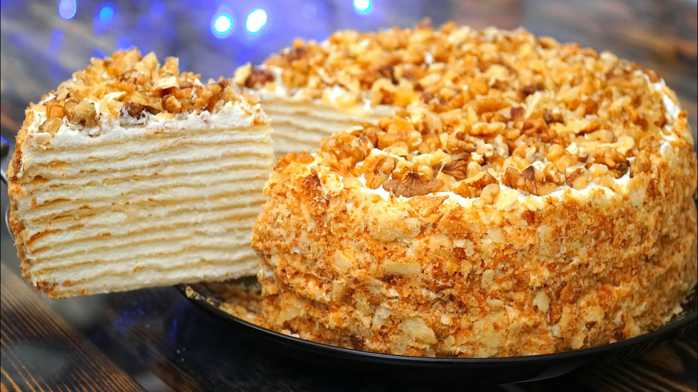
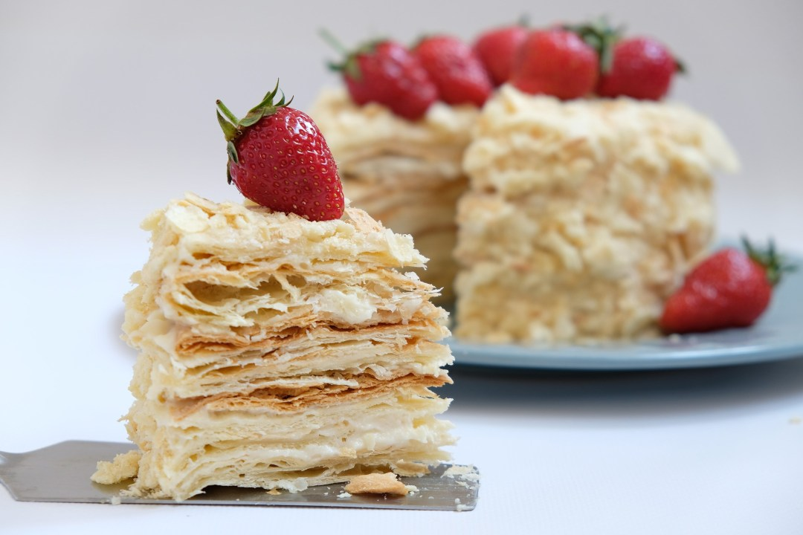

Торт Наполеон
 Ингридиенты
- Мука - 750 грамм
- Сливочное масло или маргарин - 600 грамм
- Яйца - 2 штуки
- Соль - 1 чайная ложка
- Уксус 5-7% - 1,5 столовые ложки
- Вода - приблизительно 220 миллилитров
Тесто для торта Наполеон
- Молоко - 1 литр
- Сахар - 300 грамм
- Яйца - 4 штуки
- Мука - 120 грамм
- Сливочное масло - 320 грамм
- Ванильный сахар - 10-15 грамм
- Сахарная пудра для посыпки - 3 столовые ложки
Крем для торта Наполеон
Рецепт приготовления
Шаг 1:
Приготовим слоеное тесто для торта Наполеон. Мы будем готовить слоеное тесто быстрого приготовления. Прежде всего приготовим жидкость. В мерную кружку разбиваем 2 яйца, добавляем одну чайную ложку соли, 1,5 столовые ложки 5-7% уксуса, перемешиваем. Добавляем, приблизительно, 220 миллилитров ледяной воды и всё хорошо перемешиваем. Всего у нас должно получиться 375 миллилитров жидкости. Ставим жидкость в холодильник.
Шаг 2:
На стол высыпаем 750 граммов просеянной муки. Всё время окуная замороженное сливочное масло или маргарин в муку, натираем его на крупной тёрке. Слегка перемешиваем натёртый маргарин с мукой. Всего нам понадобится натереть 600 граммов замороженного сливочного масла или маргарина.
Шаг 3:
Натёртый маргарин с мукой собираем горкой, делаем углубление. Вынимаем из холодильника подготовленную жидкость, наливаем в углубление. Быстро замешиваем слоёное тесто. Тесто нельзя месить. Аккуратно поднимаем тесто с разных сторон к середине, складываем слоями и прижимаем. Убираем тестяной ком в сторонку и собираем остатки, добавляя их к основному куску теста.
Шаг 4:
Быстро замешиваем слоёное тесто. Тесто нельзя месить. Аккуратно поднимаем тесто с разных сторон к середине, складываем слоями и прижимаем. Убираем тестяной ком в сторонку и собираем остатки, добавляя их к основному куску теста.
Шаг 5:
Придаём тесту прямоугольную форму, кладём в целлофановый пакет и отправляем, минимум, на 2 часа в холодильник, лучше выдержать тесто в холодильнике 10-12 часов. Слоеное тесто для торта Наполеон готово. Слоёное тесто быстрого приготовления можно хранить в холодильнике несколько дней, а в морозильнике несколько месяцев. Размораживать слоёное тесто лучше в холодильнике.
Шаг 6:
Приготовим заварной крем для торта Наполеон. Кастрюлю ополаскиваем холодной водой, наливаем в нее один литр молока, добавляем 320 граммов сахара. Ставим кастрюлю на большой огонь, все время перемешиваем до полного растворения сахара, уменьшаем огонь до среднего и оставляем молоко нагреваться. В миску разбиваем 4 яйца, добавляем 120 граммов муки, перемешиваем миксером (не взбиваем, только перемешиваем) до образования однородной смеси.
Шаг 7:
Вливаем в смесь два половника горячего молока с сахаром, перемешиваем, добавляем еще 2 половника молока, перемешиваем и возвращаем полученную смесь в кастрюлю. Ставим кастрюлю на огонь и, все время перемешивая венчиком, варим крем до загустения.
Шаг 8:
Снимаем с огня. Добавляем в крем 20 граммов сливочного масла, перемешиваем, переливаем крем в миску, накрываем пищевой пленкой и оставляем остывать до комнатной температуры
Шаг 9:
Приступаем к выпеканию коржей для торта Наполеон. Вынимаем тесто из холодильника. Делим подготовленное тесто на 3 неравные части: две одинаковые побольше и одну поменьше. Мы будем выпекать два коржа размером 40X60 сантиметров, а после выпечки разделим их пополам, и еще один корж меньшего размера для посыпки. Если размер вашего противня 30X40 сантиметров, то, соответственно, нужно испечь 4 коржа для торта Наполеон и корж для посыпки.
Шаг 10:
На стол, присыпанный мукой, кладем один кусок теста. Тесто и скалку тоже присыпаем мукой. Раскатываем тесто в пласт, толщиной, приблизительно, 3-4 миллиметра, по размеру противня. Противень по периметру протираем влажной салфеткой и при помощи скалки выкладываем на него раскатанное тесто, края слегка прижимаем. Излишки теста обрезаем и добавляем к той части теста, из которой будем выпекать корж для посыпки торта Наполеон.
Шаг 11:
На корже делаем маленькие надрезы ножом. Выпекаем коржи для Наполеона в заранее разогретой духовке при температуре 200-220 градусов Цельсия, приблизительно, 20 минут. Для того, чтобы проверить готовность коржа, приподнимаем край коржа - если корж не прогибается, он готов. Готовые коржи вынимаем из духовки и выкладываем на деревянную доску, даем остыть. Также выпекаем оставшиеся коржи. Корж для посыпки выпекаем на несколько минут дольше.
Шаг 12:
Заварной крем остыл до комнатной температуры. Приготовим масляный заварной крем для торта Наполеон. В миску миксера кладем 300 граммов мягкого сливочного масла, взбиваем добела. Можно положить немного меньше или больше масла, по вашему вкусу. Во взбитое масло, понемногу добавляем заварной крем, каждый раз взбивая в плотную массу. В процессе взбивания добавляем 10-15 граммов ванильного сахара и один раз снимаем крем со стенок миксера. Взбиваем до получения пышного крема. Масляный заварной крем и коржи для торта Наполеон готовы.
Шаг 13:
Собираем торт Наполеон. Разрезаем коржи для торта Наполеон пополам, таким образом, у нас получается 4 коржа размером, приблизительно, 30X40 сантиметров. Кладем один корж на доску, выкладываем на него четвертую часть подготовленного крема, разравниваем. Кладем второй корж гладкой стороной вверх, смазываем его четвертой частью крема и так далее. Последний, четвертый корж кладем гладкой стороной вверх и смазываем бока и верх торта оставшимся кремом.
Шаг 14:
Приготовим посыпку для торта Наполеон. Корж, который мы выпекали для посыпки измельчаем в крошку. Добавляем столовую ложку ванильной сахарной пудры, перемешиваем и обсыпаем бока и верх торта подготовленной крошкой. Сахарную пудру можно купить в магазине или приготовить дома. Рецепт приготовления сахарной пудры есть на нашем сайте в разделе Кулинарные хитрости.
Шаг 15:
Верх торта дополнительно посыпаем одной-двумя столовыми ложками сахарной пудры. Такое украшение торта Наполеон является классическим. Можно, также, украсить торт Наполеон ягодами: малиной, клубникой, виноградом, можно сделать розочки из крема.
Шаг 16:
Готовый торт Наполеон перекладываем на блюдо, на котором будем его подавать, или нарезаем на куски и подаем как отдельные пирожные. Нарезать торт Наполеон лучше всего острым ножом-пилкой, который используют для нарезки хлеба. При этом на нож не нужно давить, торт нужно распилить.
Шаг 17:
Торт Наполеон можно приготовить с фруктовой прослойкой. Рецепт торта Наполеон с яблочной прослойкой вы найдете на нашем сайте www.videoculinary.ru в разделе Торты и пирожные. Готовый торт Наполеон ставим в холодильник и вынимаем за один час до подачи. Подаем по-настоящему праздничный, всегда желанный, всеми любимый торт Наполеон к сладкому столу с чаем или с кофе.